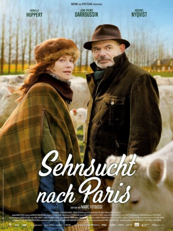

#7895 Sehnsucht nach Paris
 
 IMDB-Wertung: 6.3 / 10
IMDB-Wertung: 6.3 / 10  Metascore: 0
Metascore: 0 
Im Leben der Viehzüchterin Brigitte an der Seite ihres bodenständigen, langjährigen Ehemanns Xavier ist nicht viel Platz für Glamour und Amüsement. Die Mittfünfzigerin sehnt sich, nachdem ihr Sohn den elterlichen Hof verlassen hat, nach Zerstreuung und Abenteuer. Unter dem Vorwand eines Arztbesuchs bricht die attraktive Landfrau auf, um im pulsierenden Paris ihren Alltag zu vergessen und erliegt bald dem Charme des gutaussehenden Jesper. Doch Xavier ahnt etwas und reist Brigitte nach…
Jahr: 2014
Dauer: 98 Minuten
FSK: 0
Land: Frankreich Studio: Wild BunchTonspuren: DTS - ,
Untertitel: Deutsch,
Auflösung: 1080p (1920x1040) Größe: 8120 MB
Genre: Komödie
Regisseur: Marc Fitoussi
Drehbuch: Sylvie Dauvillier
Soundtrack: Tim Gane, Seán O'Hagan
Darsteller:
 Isabelle Huppert als Brigitte Lecanu
Isabelle Huppert als Brigitte Lecanu Jean-Pierre Darroussin als Xavier Lecanu
Jean-Pierre Darroussin als Xavier Lecanu Michael Nyqvist als Jesper
Michael Nyqvist als Jesper Pio Marmaï als Stan
Pio Marmaï als Stan Marina Foïs als Christiane
Marina Foïs als Christiane- Audrey Dana als Laurette
 Anaïs Demoustier als Marion
Anaïs Demoustier als Marion- Clément Métayer als Grégoire Lecanu
- Valérie Nataf als La femme de chambre
- Raquel Castellano als L'intervenante espagnole à la conférence
- Stephanie Slama als La touriste américaine
 Audrey Quoturi als L'hôtesse du congrès (uncredited)
Audrey Quoturi als L'hôtesse du congrès (uncredited)- Jean-Charles Clichet als Régis
- Lakshantha Abenayake als Apu
- Benoît Giros als Fred
- Meriem Serbah als La démonstratrice en tissus
- Pierre Diot als Bruno Massoulier
- Irène Ismaïloff als Stéphanie Massoulier
- Louise Coldefy als La serveuse du restaurant
- Pauline Brunner als Virginie
- Arthur Mazet als Benjamin
- Hugo Fernandes als Quentin
- Chiara Morel à L'Huissier als Océane
- Julien Leprisé als Un enfant gardé par Stan
- Alexis Leprisé als L'autre enfant gardé par Stan
- Gabrielle Atger als La réceptionniste de l'hôtel
- Jean-Michel Correia als Le chauffeur de taxi
- Xavier Robic als Le policier
- Juliette Allain als La caissière du supermarché
- Jacques Ledran als Le directeur du supermarché
- Laetitia Spigarelli als La responsable du magasin où travaille Stan
- Frédéric Boismoreau als Le garçon de café
- Lydia Zavatta als La saxophoniste au cabaret
- Stéphane Philibert als Le premier artiste de cabaret aux assiettes
- Milo McMullen als L'autre artiste de cabaret aux assiettes
- Claire Simon als L'artiste cabaret au chat
- Majida Ghomari als La femme à la station-service
- Marco Panzani als L'homme à la station-service
- Andrew Bampfield als L'intervenant anglais à la conférence
- Anna Tournaire als Hôtesse vestiaire
- Michèle Raingeval als Une épouse (uncredited)
Datei: X:\2014(N-Z)\Sehnsucht nach Paris (2014, FSK0, 1920x1040).mkv seit 02.01.2018
Festplatte: HD 2013(I-Z)-2014(A-Z)
 Es gibt insgesamt 163 Filme in der Gruppe '2014(N-Z)'
Es gibt insgesamt 163 Filme in der Gruppe '2014(N-Z)'